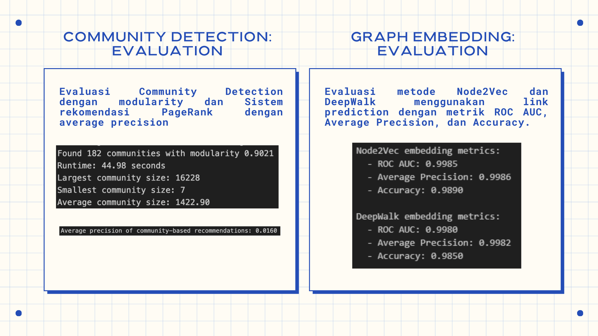
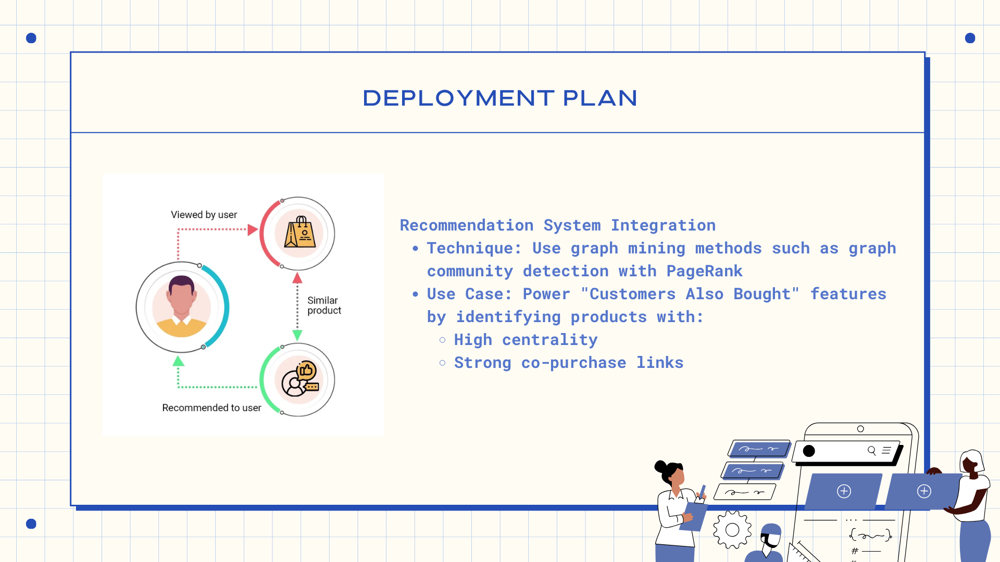

Link Prediction result and deployment plan from the Graph Mining on Amazon Co-Purchasing Dataset.
This was a project from the Data Mining course. In this project, the main objective is
to implement the CRISP-DM methodology. With several existing groups in
the class, each were given different project, with different data mining technique applied.
For our team, we were given the Amazon Co-Purchasing data. It was a network dataset, with
nodes and edges that represents relationship between items in the dataset. For it, we did
Graph Mining to find insights from the data.
Following the CRISP-DM methodology, in a team of 5, we begin by understanding the business
value of the data given, which is an Amazon co-purchasing dataset. Next we did data undersranding,
analyzing data characteristics. Then, we did data preparation and cleaning in Python. Before entering
the modelling phase, we first analyzed the network structure of the graph dataset. Identifying a node's
popularity, which can be a useful business insight. Following the network structure analysis, we did
the modelling for recommendations of co-purchasing patterns. We're using two approach, the community
detection and graph embedding. Then we evaluate the model result and drawn a conclusion.
This project's learning wasn't limited to coding techniques for data, but also extended to business
analysis — understanding what the model's calculation results actually mean and connecting them back
to business context.